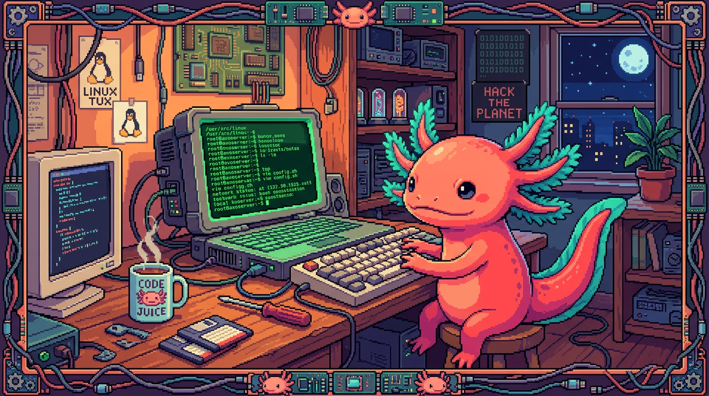

Capítulo 02 — Linux y la terminal del servidor

Tu NAS corre Ubuntu Server, una versión de Linux sin escritorio: todo se hace escribiendo comandos. La terminal ya la conociste en el Módulo 00; aquí la usas para algo real, administrar un servidor de verdad: usuarios, permisos, discos y servicios. Esta es la base sobre la que se apoya toda la administración de sistemas.
1. Por qué Linux y por qué "sin escritorio"
🟦 ¿Qué significa? — Linux y "distribución"
Linux es un sistema operativo (Módulo 00) gratuito, de código abierto y muy estable. Manda en el terreno de los servidores: buena parte de internet funciona sobre Linux. Existe en muchas variantes llamadas distribuciones ("distros"): Ubuntu, Debian, Fedora… Ubuntu es de las más populares y de las más fáciles para empezar. Tu NAS usa Ubuntu Server 26.04.
🟦 ¿Qué significa? — Ubuntu Server (sin interfaz gráfica)
Ubuntu Server es Ubuntu sin escritorio: nada de ventanas ni ratón, solo terminal. ¿Por qué así? Porque un servidor no necesita una pantalla bonita —nadie está sentado delante de él— y quitar el escritorio ahorra RAM y recursos para lo que de verdad importa: servir. Así que administras tu NAS por terminal, casi siempre conectándote desde otro equipo (lo verás más abajo).
🟦 ¿Qué significa? — SSH (conexión remota segura)
SSH (Secure Shell) es la forma estándar de entrar a la terminal de un servidor a distancia, todo cifrado. Desde tu laptop escribes algo como
ssh usuario@polypaw-nasy te aparece la terminal del NAS como si lo tuvieras delante. Es la herramienta nº 1 de cualquier administrador. (En tu caso, además, te conectas a través de Tailscale, capítulo 04, lo que mantiene la conexión segura incluso desde fuera de casa.)
2. Usuarios y permisos: el corazón de la seguridad en Linux
Linux nació con una idea clara: que muchos usuarios puedan compartir una misma máquina sin pisarse el trabajo ni husmear en lo del otro. Todo eso se construye sobre usuarios y permisos.
🟦 ¿Qué significa? — Usuario y el superusuario
rootCada persona (o cada servicio) tiene su usuario. Hay uno especial,
root, que es el administrador total: puede hacer absolutamente todo. Precisamente por esorootes peligroso: un descuido siendorootpuede dejar el sistema hecho trizas. Regla de oro: no trabajes comorooten el día a día.🟦 ¿Qué significa? —
sudo(hacer algo como administrador)
sudo("superuser do") ejecuta un único comando con permisos de administrador y te pide tu contraseña antes. Así andas como usuario normal (seguro) y solo "subes" a administrador para tareas puntuales:bash sudo apt update # actualizar la lista de programas (necesita permisos)Verássudodelante de casi cualquier comando administrativo. Es el punto medio entre el poder y la seguridad.🟦 ¿Qué significa? — Permisos de archivos (lectura, escritura, ejecución)
Cada archivo y cada carpeta en Linux lleva permisos que indican quién puede leerlo (r), escribirlo (w) o ejecutarlo (x), y eso para tres grupos: el dueño, su grupo y los demás. Cuando haces
ls -laparece algo parecido a esto:drwxr-xr-x edwar edwar /srv/nasEsa cadenarwxr-xr-xson los permisos. No hace falta que te la aprendas de memoria ahora; lo que cuenta es la idea de fondo: Linux decide, archivo por archivo, quién puede hacer qué. Es justo lo que impide que un usuario lea los datos de otro. (¿Te suena? Es el primo de la RLS del Módulo 07, pero aplicado a archivos.)🟦 ¿Qué significa? —
chmodychown
chmodcambia los permisos de un archivo (quién lee, escribe o ejecuta).chowncambia el dueño de un archivo. Aparecen, por ejemplo, cuando configuras qué carpeta comparte Samba y quién puede escribir en ella. Por ahora basta con reconocerlos cuando los veas; los detalles se consultan en el momento.
3. Servicios: programas que corren solos en segundo plano
🟦 ¿Qué significa? — Servicio (demonio) y
systemdUn servicio (o daemon, "demonio") es un programa que corre en segundo plano, sin que nadie tenga que abrirlo, atendiendo peticiones: Samba (compartir archivos), AdGuard (DNS) y demás. En Ubuntu, de los servicios se encarga
systemd, el "director de orquesta" que los arranca al encender la máquina y los mantiene vivos. Se controlan consystemctl:bash systemctl status smbd # ¿está corriendo Samba? sudo systemctl restart smbd # reiniciarloEn tu NAS,smbd(Samba) está activo como servicio: por eso comparte archivos a todas horas sin que tengas que "abrirlo".
4. Ver y entender los discos (los tuyos)
🟦 ¿Qué significa? — Sistema de archivos y puntos de montaje
En Linux todo cuelga de una sola raíz
/: aquí no hay "C:" ni "D:" como en Windows. Cada disco se "monta" en una carpeta. Tu HDD de datos está montado en/srv/nas, así que entrar a esa carpeta es, en la práctica, entrar al disco grande. "Montar" no es más que conectar un disco a un punto del árbol de carpetas.🟦 ¿Qué significa? — Comandos para ver discos
bash df -h # espacio libre/usado por disco, en formato legible lsblk # lista los discos y sus particiones, en árbolEn tu NAS,df -hte mostraría el SSD del sistema (~98 GB, 12% usado) y el HDD en/srv/nas(954 GB, casi vacío). Son los comandos a los que recurres cuando te preguntas "¿cuánto espacio me queda?".🟦 ¿Qué significa? — LVM (gestión flexible de discos)
LVM (Logical Volume Manager) es una capa que te deja manejar el espacio con flexibilidad: agrandar o combinar "volúmenes" sin tener que reparticionar todo de nuevo. Tu Ubuntu usa LVM para el sistema. De momento te alcanza con saber que existe y que da margen para crecer; sus detalles los aprendes el día que necesites ampliar espacio.
5. Mantener el servidor: actualizaciones
🟦 ¿Qué significa? — Gestor de paquetes (
apt)En Linux no andas bajando instaladores de webs sueltas: usas un gestor de paquetes que instala programas desde repositorios oficiales con un solo comando. En Ubuntu ese gestor es
apt:bash sudo apt update # refresca la lista de versiones disponibles sudo apt upgrade # actualiza los programas instalados sudo apt install programa # instala algo nuevoMantener el servidor al día (update+upgrade) es la tarea de mantenimiento más importante de todas: ahí se tapan los fallos de seguridad. Es como aplicar las actualizaciones del teléfono, solo que por terminal.
✅ Checklist — ¿ya domino esto?
- [ ] Sé qué es Linux, una distribución y por qué Ubuntu Server no tiene escritorio.
- [ ] Entiendo SSH (conectarme a la terminal del servidor a distancia).
- [ ] Distingo un usuario normal de
root, y usosudopara tareas administrativas. - [ ] Entiendo los permisos de archivos (rwx, dueño/grupo/otros) y para qué sirven.
- [ ] Sé qué es un servicio/demonio y que
systemd/systemctllos gestiona (ej.smbd). - [ ] Veo discos con
df -h/lsblky entiendo el montaje (/srv/nas) y, a grandes rasgos, LVM. - [ ] Mantengo el sistema con
apt update && apt upgrade.
🧪 Ejercicios
Marcados 💻 si requieren conectarte a tu NAS (cuando sepas cómo, capítulo 04) o cualquier Linux.
- root y sudo. Explica por qué es mala idea trabajar siempre como
rooty qué problema resuelvesudo. - Permisos. En
rwxr-xr-x, ¿qué puede hacer el dueño y qué pueden hacer los demás? - Servicio. ¿Qué significa que
smbdesté "activo" como servicio? ¿Por qué no tienes que "abrir" Samba cada vez? - Montaje. Explica qué quiere decir que tu HDD esté "montado en
/srv/nas". - 💻 Comandos reales. Cuando te conectes al NAS, ejecuta
df -hylsblky anota: ¿cuánto espacio libre tiene/srv/nas? ¿Cuántos discos ves? - 💻 Actualiza. Ejecuta
sudo apt updatey observa qué reporta (no hace faltaupgradesi no quieres).
➡️ Siguiente: Capítulo 03 — Compartir archivos con Samba.